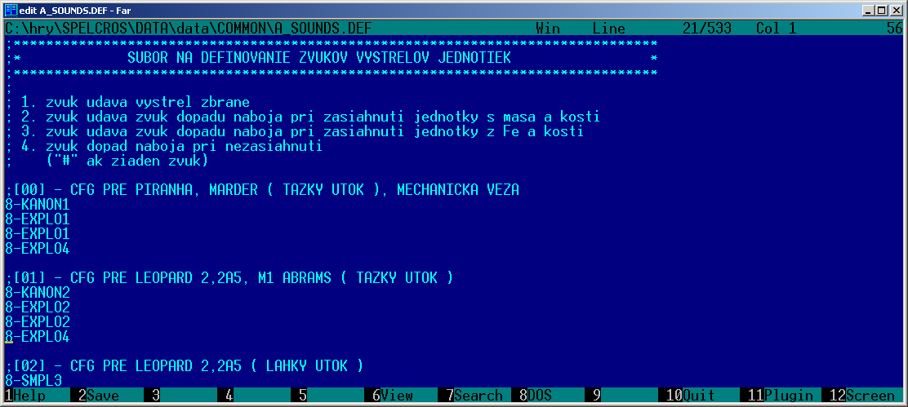

|
This little program allows you to modify Spellcross units properties which are defined in
binary file JENDOTKY.DEF in archive COMMON.FS. Spellcross game also allows you to add some extra units
(only limited count but better than nothing).
This program was created and tested in BDS2006 Turbo C++ at M$ Windows XP so I have no idea what
it does in newer OS versions but since I didn't used anything XP specific it should work.
There is only one thing to set. You have to choose correct game version. Original CZ version has one byte shorter unit record so it's no compatible with any newer version. This setting is available in menu "Version". The same menu allows you to convert version from one to another (of course you will lost that one aditinal byte which contains "unit healed by fire" flag).

|
All items of program window have hint comments in both CZ and ENG language so
it should be obvious.
Some items in unit record are a bit mysterious and are usually commented with "???". Not all
values/combinations are valid. Game could crash (it should write reason into *.ERR file in game folder).
I recommend you to make backup before editing. ;-)
Any changes in unit record has to be saved with button "Save changes". If you have
changed something incorrectly you can "Discard chanes". You can also add new unit or remove last units from list.
Only last unit can be removed because otherwise unit order would be changed and no other *.DEF file could work correctly.
All the buttons down in the window affects only one selected unit.
If you've finish editing you have to save whole unit list using menu "File".
Changes in JEDNOTKY.DEF appears only in new game or new level (as almost every change in data archives).
Here are only the basic properties settings. There are some mysterious items but I think best way to hadnle them is to copy their values from similar units. It's mostly experimental work (edit/save/make common.fs/run game/fffuuuu because it's not doing what you thought it would).
Here are defined unit graphics files. At first there is icon file and help resource and main unit graphics resources. Then there are attack animations for unit/weapon shot/projectile hit. There is also one field for projectile file which is common for all kinds of attack.
Sounds in Spellcross are defined using classes. Each unit has several class IDs for
it's actions. Theese classes are defined in x_SOUNDS.DEF files in COMMON.FS (coresponding *.DEF files are
in hint help).
Sounds are the biggest problem of Spellcross game because maximal count of
classes pf each kind is limited. For example weapon sounds (A_SOUNDS.DEF) allows you to add only 2 additional classes for CZ version
(ENG version seems to have bigger reserve).
|  |
Allows you to set some special actions for units (for example aircraft take off or landing). Spellcross also allows you to make death action which is in newer game version used at least for death animation (not directly possible in CZ version).
It's result of debuging process. I've used it to understand meaning of more complex binary items.
Actual unit name which is displayed is not defined in this JEDNOTKY.DEF file but in UNITS.ENG (or .CZ, .PL, etc.) text file in COMMON.FS where each unit has one line of text. Text encoding for CZ version is CP895, for PL version surprisingly CP1250, other languages probably uses CP1250 also.
It's freeware so you are free to use and redistribute it but only with all included files together (especially with this help)
without any modifications!
Since it's freeware you are using this at you own risk! Any possible dammage caused by this SW is your problem.
If you don't agree with theese terms don't use this SW.
In case of some problems with this SW you can contact me at s.maslan@seznam.cz. Additional informations and new versions could be find here: http://www.spellcross.kvalitne.cz/units/spell_units/spell_uniteditor.html.